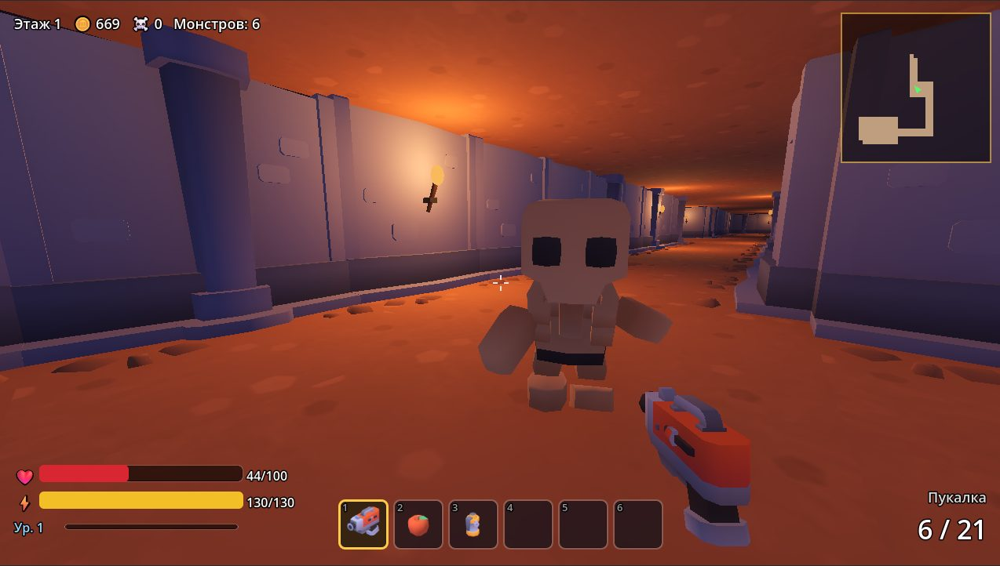
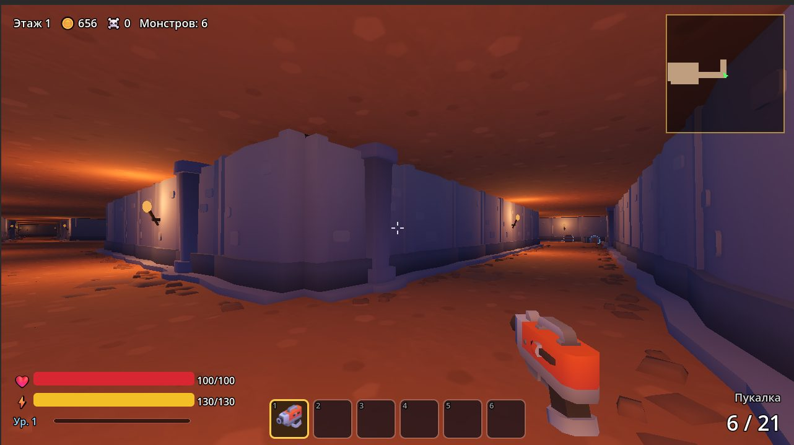
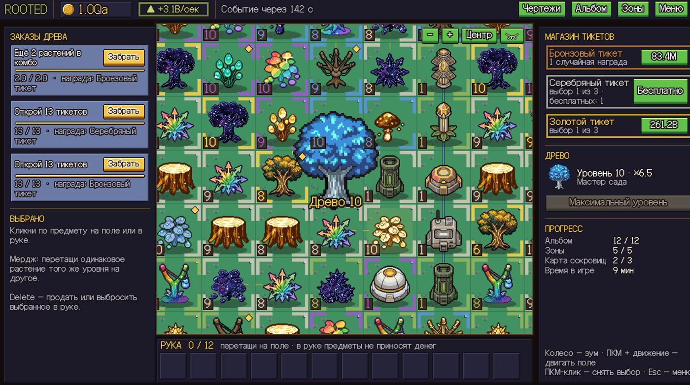
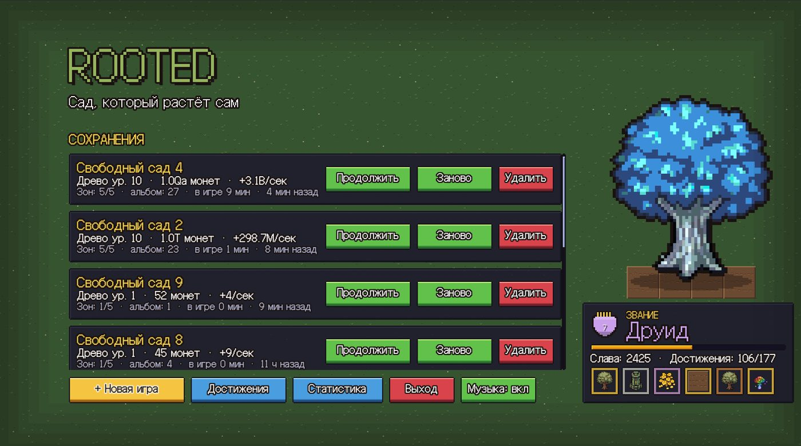
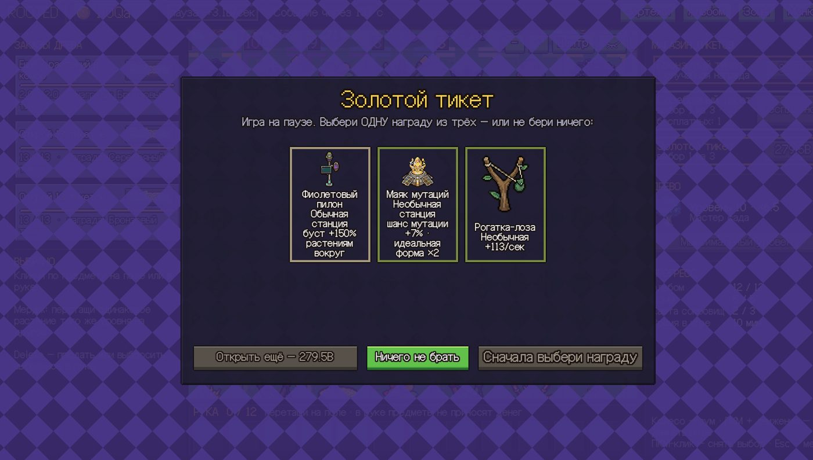

A game about the history of Kazakhstan
I'm a 21-year-old self-taught developer from Kazakhstan. I want to make the game about my country that I could never find.
Write to me
The idea
Very few games tell the story of the Kazakh steppe. I want to build one that does: the Saka and their burial mounds, the Silk Road cities, the nomadic khanates, Tengri and the spirits of the ancestors.
The project is at the planning stage. Before I start it, I'm proving to myself that I can finish games, which is why there are two completed games below.
I'm looking for tools and support that would let me commit to it properly.
Dungeon
A 3D first-person dungeon crawler I build alone. You go down through floors, fight enemies and bosses, collect loot and level up your character. It has a minimap, an inventory bar, health and energy, and weapons with ammo.

Rooted
An idle and merge game about a garden that grows itself. You merge plants up to their legendary forms, open tickets for rewards, complete orders, fill an album and unlock zones. It has multiple save slots, achievements and ranks, and it runs from the first seed to the max-level tree.


